Informe Final de Pruebas
sobre Registro de Nuevo Usuario.
«Calidad no es una herramienta. Es un engranaje entre seis actores donde nadie trabaja solo.» — QASL · contrato blindado entre roles
§1 Resumen ejecutivo
El presente informe consolida los resultados de la ejecución de pruebas sobre la historia de usuario HU_REG_01, ejecutada bajo el marco metodológico QASL · Quality Assurance Shift-Left. La suite ejecutó 4 capas independientes de detección de defectos —funcional, contrato API, performance y seguridad— sobre un único system under test, consolidando sus métricas en un dashboard observable y publicando todos los artefactos en un showcase público.
El veredicto técnico de la ejecución es PASS con observaciones: los thresholds de calidad definidos previamente fueron alcanzados, los tests que fallaron lo hicieron por defectos reales del SUT (no del framework), y dichos defectos están documentados según los estándares aplicables.
El framework, asentado sobre un handoff blindado entre 6 actores (Cliente, Analista Funcional, QA, DevOps, Project Manager, Equipo de Desarrollo), produce los artefactos previstos por la norma ISO/IEC/IEEE 29119-3:2021 en cada una de sus 11 fases (F0-F10). Las métricas globales de la ejecución se sintetizan a continuación.
| Capa | Herramienta | Métricas | Veredicto |
|---|---|---|---|
| Funcional | Playwright + Allure | 17/20 · pass rate 85.0% · 2 min 36 s | PASS · 1 defecto |
| Contrato API | Newman + HTMLExtra | 124/148 aserciones · 74 requests · 24.8 s | PASS · expected failures |
| Performance | K6 + custom HTML | 20 iter · p95 302 ms · 5/5 thresholds | PASS |
| Seguridad | OWASP ZAP Baseline | 1H · 5M · 12L · 8I (26 alerts) · 45 reglas pasaron | PASS con hallazgos |
§2 Marco metodológico · DoR/DoD encadenado
El framework QASL · Quality Assurance Shift-Left formaliza la cooperación entre 6 roles mediante una cadena de contratos Definition of Ready y Definition of Done: el DoD de un actor es el DoR del siguiente. Sin un DoD cerrado, el siguiente actor no puede comenzar. Esta es la regla central del framework y el motor que asegura trazabilidad sin pérdidas entre fases.
2.1 Los 6 actores y sus contratos
Cada actor abre su DoR cuando recibe un input válido de su antecesor y cierra su DoD cuando entrega un artefacto verificable a su sucesor. El framework opera 11 fases (F0-F10) entre estos 6 actores:
- Cliente · negocio · F0 (brief), F4 (sign-off)
- Analista Funcional · requerimientos · F1 (HU original), F3 (refinamiento)
- QA · calidad · F2 (pruebas estáticas con AI), F5 (trazabilidad shift-left), F7 (validación temprana)
- DevOps · infraestructura · F6 (primer deploy)
- Project Manager · planificación · F8 (backlog Jira)
- Equipo completo · ejecución · F9 (Planning Poker · VCR), F10 (ejecución 4 capas)
2.2 Método INVEST aplicado a la HU
Toda HU que ingresa al pipeline debe satisfacer los seis atributos del método INVEST en la fase F1: ser Independiente, Negociable, Valiosa, Estimable, Pequeña (cabe en un sprint) y Testable. La HU bajo prueba (HU_REG_01) cumplió los seis criterios al cierre de F4.
2.3 Framework VCR · priorización objetiva (ISO 31000:2018)
La decisión de automatizar una HU se toma de forma cuantitativa en la fase F9 (Planning Poker) mediante el framework propietario VCR (Valor + Costo + Riesgo), basado en la norma ISO 31000:2018 de gestión de riesgos. La fórmula es VCR_Total = VCR_Valor + VCR_Costo + VCR_Riesgo, con VCR_Riesgo = Probabilidad × Impacto. Si VCR_Total ≥ 9, la HU se automatiza; si es menor, se ejecuta manualmente. La HU bajo análisis obtuvo VCR = 11, justificando la inversión en automatización en las 4 capas técnicas.
2.4 Visualización del engranaje · Master View
El Master View visualiza las 11 fases (F0-F10) como una lámina editorial donde cada cápsula representa un actor con su ciclo interno DoR/DoD, conectados por handoffs con el artefacto que efectivamente cambia de manos. Las fases F2 y F5 destacan como fases hero por estar ejecutadas con asistencia de Claude AI.


§3 Marco normativo aplicado
Toda decisión, plantilla, asersión y reporte producido por el framework está alineado con estándares públicos vigentes. La tabla siguiente lista cada norma referenciada y su aplicación específica en QASL.
| Norma | Versión | Aplicación en QASL |
|---|---|---|
| ISTQB CTFL | v4.0 (2023) | Niveles, tipos y técnicas de prueba; gestión de defectos (Cap. 5) |
| ISO/IEC/IEEE 29119-3 | 2021 | Plantillas de Test Documentation · este informe sigue su estructura. Reemplaza IEEE 829 (derogada 2008) |
| ISO/IEC/IEEE 29148 | 2018 | Requirements Engineering · validación INVEST de la HU. Reemplaza IEEE 830 |
| IEEE 1044 | 2009 (R2017) | Standard Classification for Software Anomalies · taxonomía aplicada en BUG-001 |
| ISO/IEC 25010 | 2011 | SQuaRE · Product Quality Model · característica de calidad afectada en defectos |
| OWASP Top 10 | 2021 | Categorización de hallazgos de seguridad en F10.4 + clasificación de BUG-001 |
| ISO 31000 | 2018 | Gestión de riesgos · base del framework propietario VCR |
| IEEE 1028 | 2008 | Software Reviews and Audits · referencia para las pruebas estáticas (F2) |
Adicionalmente, el informe de defecto (BUG-001) cita CWE (Common Weakness Enumeration) y CVSS v3.1 (Common Vulnerability Scoring System) cuando la naturaleza del hallazgo es de seguridad.
§4 Sistema bajo prueba y entorno
El sistema bajo prueba es automationexercise.com, una aplicación web pública de e-commerce diseñada como entorno controlado para automatización de QA. La historia de usuario validada cubre el flujo de registro de un nuevo usuario.
4.1 Stack técnico de la suite
| Capa | Herramienta | Versión | Función |
|---|---|---|---|
| Funcional | Playwright + TypeScript | 1.56 | E2E browser-based · Page Object Model · Allure reporter |
| Contrato API | Newman + HTMLExtra | 6.2.1 · 1.23 | Replay de HARs como Postman Collection v2.1 · asertions strict |
| Performance | K6 | 0.57 | Standalone JS · flujo dinámico register → token → search → cleanup |
| Seguridad | OWASP ZAP Baseline | 2.17 | Passive scan · spider + reglas pasivas |
| Observabilidad | Grafana + InfluxDB | 11.4 · 1.8 | Dashboard QASL Quality Cockpit · 4 capas en una vista |
| Static Analysis | Python + Anthropic Claude AI | 3.8+ · Sonnet 4 | Detección de gaps en HU + generación de 4 CSVs trazables |
4.2 Entorno de ejecución
- SO de ejecución: Windows 11 Home
- Browser: Chromium (Playwright bundled), modo headless: false para el demo
- Concurrencia: 1 worker en E2E (serial), 2 VUs en K6 (concurrencia demo), 1 thread Newman
- Time Travel: ejecución del
3 de mayo de 2026 - Docker stack: 12 containers activos (Grafana, InfluxDB, Loki, Promtail, ZAP, Renderer, Postgres, SQL Server, Redis, n8n, Adminer, Allure)
§5 Diseño de pruebas · Shift-Left (F0-F5)
Antes de escribir una sola línea de código de prueba, el framework analiza la HU con asistencia de Claude AI (F2) y genera la estructura completa de trazabilidad CSV (F5). Esta es la pieza diferencial del shift-left QASL: el plan de pruebas está formalizado antes del primer commit del desarrollador.
5.1 Análisis estático con AI · cobertura de la HU
La HU original recibida del Analista Funcional contenía 2 escenarios documentados sobre 8 escenarios necesarios (calculados como número de reglas de negocio × 2: un caso positivo y uno negativo por regla). Esto resultó en una cobertura inicial de 25%.
El analizador estático invocó al modelo Claude para detectar las brechas de cobertura. Identificó 5 gaps (3 de severidad ALTO + 2 de severidad MEDIO). Tras el refinamiento con el cliente y la incorporación de los escenarios sugeridos, la HU IDEAL final tiene 7 escenarios y alcanza el 100% de cobertura sobre las 4 reglas de negocio.
5.2 Trazabilidad shift-left · 4 CSVs auto-generados
En la fase F5, el QA invoca nuevamente a Claude AI sobre la HU IDEAL aprobada y genera la estructura completa de trazabilidad como cuatro archivos CSV interrelacionados, listos para ingestar en Jira/Xray. La distribución de los artefactos generados es:
| Artefacto | Cantidad | Función |
|---|---|---|
1_User_Storie.csv | 1 | HU completa con metadata: épica, INVEST, BRs, escenarios, VCR (campos vacíos hasta F9) |
2_Test_Suite.csv | 3 | TS01 positivos · TS02 negativos · TS03 seguridad e integración |
3_Precondition.csv | 9 | Preconditions reutilizables referenciadas por TC |
4_Test_Case.csv | 20 | Test cases pre-código con trazabilidad TC ↔ HU ↔ BR ↔ TS |
5.3 Trazabilidad 1:1 con la suite ejecutada
Los 20 Test Cases generados por la AI se reflejan 1:1 en la suite Playwright (F10.1). El nombre del test en el código TypeScript es idéntico al campo Titulo_TC del CSV, garantizando trazabilidad bidireccional sin necesidad de mapping artificial. Esta paridad es verificable abriendo simultáneamente el CSV y el archivo HU_REG_01.spec.ts.
§6 Ejecución de pruebas · 4 capas (F10)
La fase F10 ejecuta las 4 capas de detección de defectos sobre el SUT. Cada capa es un gate independiente con sus propios criterios de aceptación, su propia herramienta y su propio reporte canónico. La consolidación se realiza en F10.5 (Grafana). Las subsecciones siguientes presentan los resultados capa por capa.
6.1 Capa funcional · Playwright + Allure
La suite funcional E2E ejecuta los 20 test cases del CSV contra el browser Chromium en modo serial (1 worker), capturando archivos HAR de cada ejecución para alimentar la capa de contrato API (F10.2). Los resultados se documentan en formato Allure nativo.
| Métrica | Valor | Comentario |
|---|---|---|
| Test cases ejecutados | 20 | 20 TCs cubriendo TS01 (positivos · 6) · TS02 (negativos · 9) · TS03 (seguridad · 5) |
| Pasaron | 17 | Pass rate 85.0% |
| Fallaron | 3 | 3 fallos atribuidos al mismo defecto del SUT (BUG-001, ver §9.1) |
| Tiempo total | 2 min 36 s | Ejecución serial · 1 worker · headed mode |
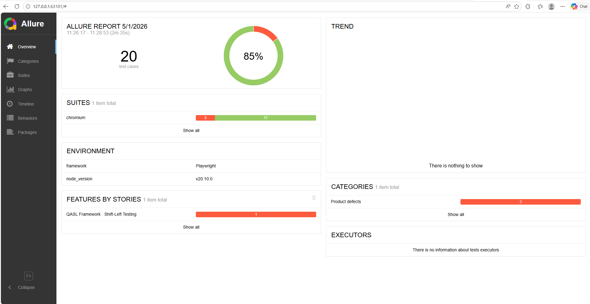
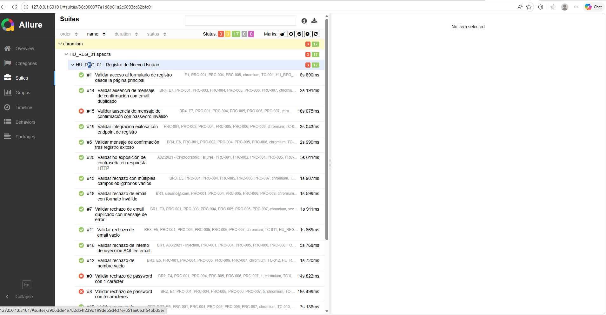
Los 3 fallos corresponden a TC-008 (password de 5 caracteres), TC-009 (password de 1 carácter) y TC-015 (ausencia de mensaje de confirmación con password inválido). Los tres son evidencia del mismo defecto del SUT y están consolidados en el informe BUG-001 (§9.1).
6.2 Capa contrato API · Newman + HTMLExtra
La capa de contrato API se construye automáticamente desde los archivos HAR capturados durante la ejecución E2E. El script run-api.mjs filtra los entries relevantes (eliminando assets estáticos, telemetría y third-party), deduplica por método+URL+body y genera una Postman Collection v2.1 que se ejecuta con Newman.
Las assertions son estrictas: cada request debe responder exactamente con el código de status capturado durante el E2E. No se utilizan fallback oneOf que oculten failures.
| Métrica | Valor | Comentario |
|---|---|---|
| Requests | 74 | Filtradas desde 3 050 entries en 20 HAR files |
| Assertions ejecutadas | 148 | 2 assertions por request: response time y status code |
| Passed | 124 | Pass rate 83.8% |
| Failed | 24 | Todos en POST /signup · expected failures (ver nota debajo) |
| Tiempo total | 24.8 s | Average response time 254 ms |
Las 24 failures son expected failures documentadas: corresponden al endpoint POST /signup que durante el E2E (con browser context) responde 200/302 pero al ser replay-eado por Newman responde 403 Forbidden debido a la protección anti-bot de Cloudflare. Esta asimetría es el valor agregado del módulo: el framework correctamente detecta y reporta que ciertos endpoints no son replay-safe sin contexto de browser.
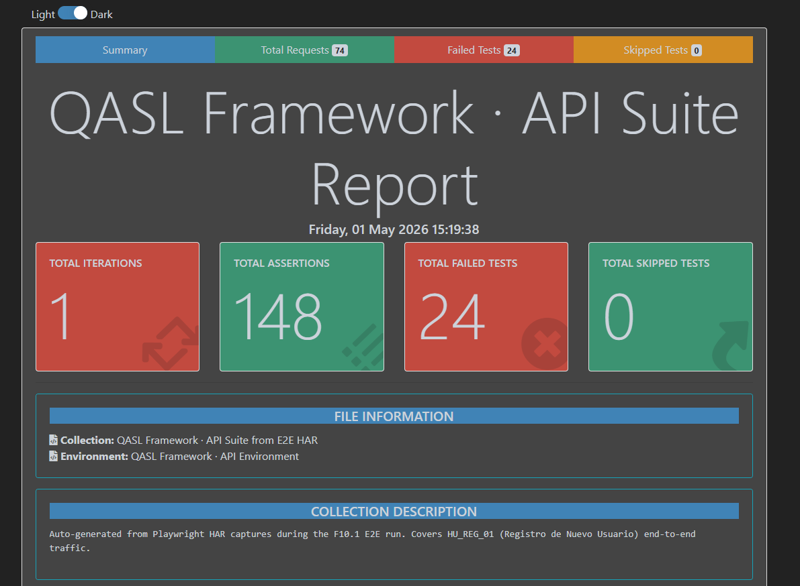
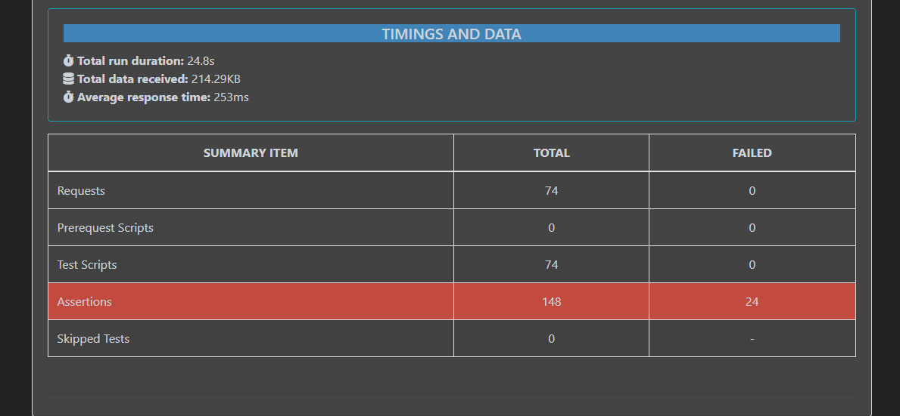
6.3 Capa performance · K6
La capa de performance ejecuta un script standalone con flujo dinámico de adquisición de token. La iteración consta de cuatro groups: SETUP (creación de cuenta vía /api/createAccount) → AUTH (verificación de login y adquisición de token simulado vía /api/verifyLogin) → AUTHENTICATED (búsqueda de productos pasando el token en header) → TEARDOWN (eliminación de cuenta vía /api/deleteAccount).
La carga es de 2 VUs concurrentes durante 30 segundos (5 s ramp-up + 20 s hold + 5 s ramp-down), suficiente para demostrar el patrón de adquisición de token sin saturar el SUT público.
| Métrica | Valor | Threshold | Estado |
|---|---|---|---|
| Iteraciones | 20 | — | — |
| HTTP requests | 80 | — | — |
| HTTP failure rate | 0.00% | < 50% | PASS |
| Response time p50 | 242 ms | — | — |
| Response time p95 | 302 ms | < 3000 ms | PASS |
| Max VUs | 2 | — | — |
| Thresholds | 5/5 | — | 100% |
| Checks | 180/180 | — | 100% |
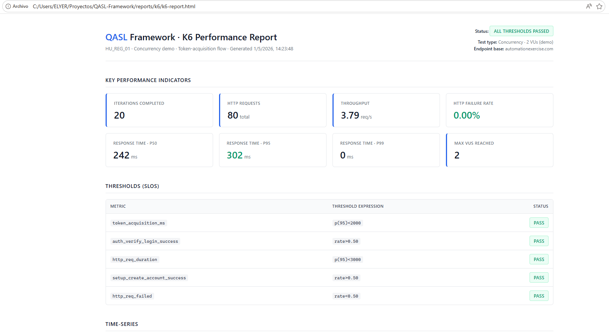
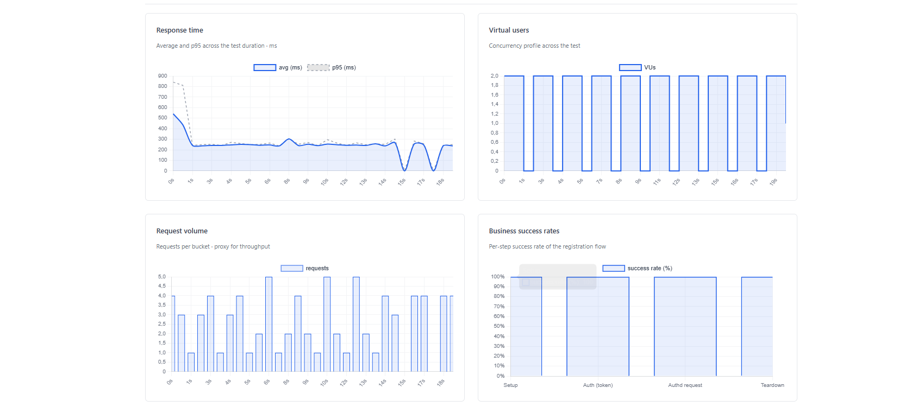
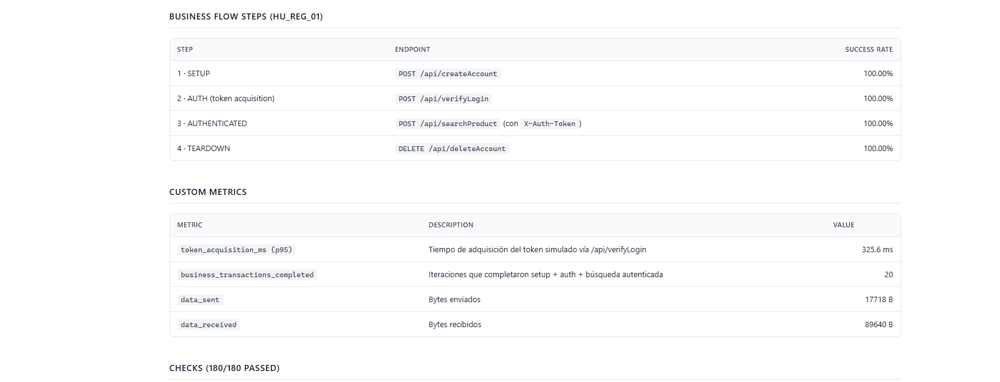
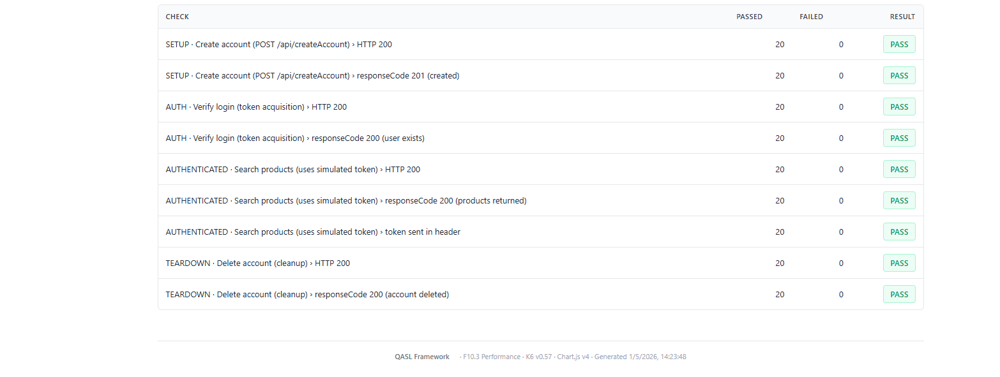
6.4 Capa seguridad · OWASP ZAP Baseline
La capa de seguridad ejecuta un Baseline Scan de OWASP ZAP a través de un container Docker. Es un scan pasivo y no intrusivo (no realiza active probes que puedan dañar el SUT) que combina spider y reglas de detección pasiva durante aproximadamente 3-5 minutos.
| Severidad | Cantidad | Hallazgos representativos |
|---|---|---|
| HIGH | 1 | Vulnerable JS Library (jQuery / Bootstrap con CVEs conocidas) |
| MEDIUM | 5 | CSP header missing, Source Code Disclosure SQL, Anti-CSRF Tokens missing |
| LOW | 12 | HSTS missing, Cookie sin HttpOnly/Secure, X-Powered-By leak |
| INFO | 8 | Modern Web Application, Session Management identified |
| TOTAL | 26 | 45 reglas adicionales pasaron sin alerts |
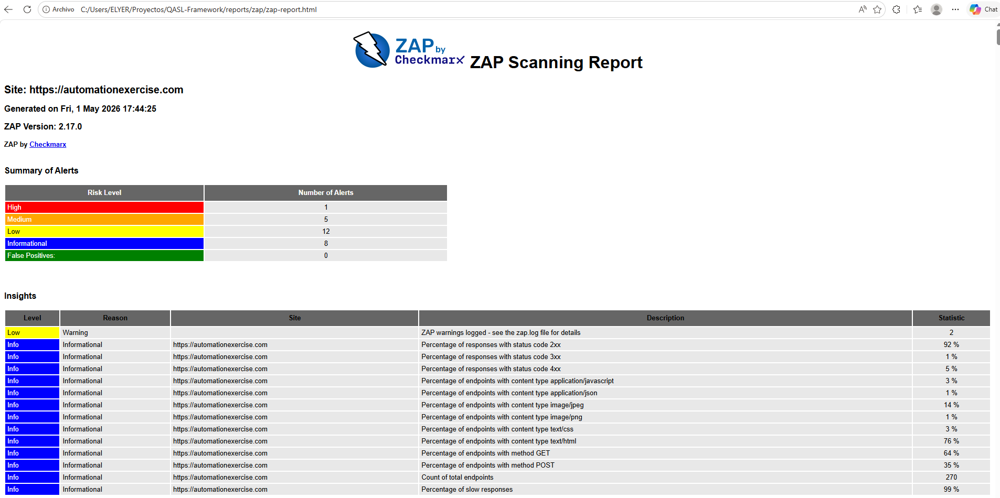
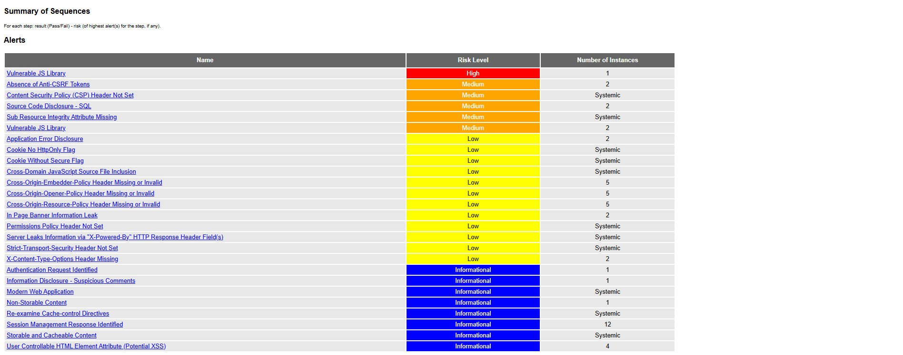
Los 26 hallazgos son defectos reales del SUT (no del framework). Su sola detección y categorización es el valor agregado de la capa de seguridad. La interpretación priorizada de estos hallazgos se desarrolla en §9.2.
§7 CI/CD Pipeline · DoR/DoD ejecutable (GitHub Actions)
El método QASL no es un documento — es un pipeline ejecutable. Las 11 fases del Master View se materializan en GitHub Actions como 11 steps secuenciales, donde cada step es un gate de calidad que cierra el DoD de un actor antes de pasar al siguiente. Cuando todos pasan en verde, el showcase público se publica automáticamente en GitHub Pages.
7.1 Mapeo 1:1 entre el Master View y el pipeline
| Step | Fase | Actor | Gate ejecutado |
|---|---|---|---|
F00 | 00 | Cliente | Verifica entrega del brief de negocio · existencia del folder de HUs originales |
F01 | 01 | Analista Funcional | Valida HU original presente · cumple INVEST |
F02 ★ | 02 | QA con Claude AI | Reporte de pruebas estáticas generado · HU IDEAL refinada |
F03 | 03 | Analista Funcional | Loop de refinamiento documentado en gap chart F03 |
F04 | 04 | Cliente | Aprobación formal documentada en gap chart F04 |
F05 ★ | 05 | QA con Claude AI | 4 CSVs presentes con filas mínimas (User Story, Test Suite, Precondition, Test Case) |
F06 | 06 | DevOps | Build deployado en QA · gap chart F06 cerrado |
F07 | 07 | QA · Smoke | TypeScript type-check · los 20 specs E2E + utilidades compilan sin errores |
F08 | 08 | PM · Scrum | Backlog priorizado · gap chart F08 cerrado |
F09 | 09 | Equipo · Planning Poker | Decisión VCR (ISO 31000) · VCR=11 → AUTOMATIZAR |
F10 | 10 | Equipo · 4 capas | BUG-001 documentado · plantilla profesional · npm run docs:build publica el showcase completo |
🚀 | — | GitHub Pages | Deploy automático del directorio docs/ a la URL pública |
7.2 Decisión consciente · por qué este pipeline NO ejecuta E2E + API + K6 + ZAP en CI
El sistema bajo prueba (automationexercise.com) es un servicio público y compartido. Ejecutar regresión completa desde un runner de GitHub Actions —cuyas IPs están flaggeadas por sistemas anti-bot como Cloudflare— produciría dos efectos no deseados:
- Abuso de recursos ajenos. El SUT no nos pertenece. Atacarlo desde un runner público es mal uso de un servicio comunitario.
- Resultados no deterministas. Los IPs del runner reciben respuestas
403intermitentes que no reflejan calidad del código sino disponibilidad anti-bot. Eso rompe la utilidad del pipeline como gate.
La decisión profesional es ejecutar las 4 capas localmente (donde el browser tiene fingerprint real y la IP no está marcada) y auditar los artefactos resultantes en CI. El pipeline valida que los reportes de Allure, Newman, K6 y ZAP existan en docs/reports/, que el BUG-001 esté documentado, y que la plantilla profesional de defecto esté presente. Después regenera el showcase con npm run docs:build y lo publica.
En un entorno cliente real (entorno QA propio, sin SUT compartido, runners autohospedados), el mismo workflow incluye stages adicionales que ejecutan E2E + API + K6 + ZAP contra el SUT del proyecto. La estructura del pipeline es portable; lo único que cambia es el target.
7.3 Trigger y portabilidad
- Trigger manual ·
workflow_dispatch· botón "Run workflow" en la pestaña Actions del repositorio. - Trigger automático ·
on: pushamainen paths relevantes (docs/,scripts/, el propio YAML). - Portabilidad · este workflow está escrito en YAML estándar de GitHub Actions, pero la estructura de 11 steps secuenciales con gate por fase es trasladable a Jenkins (declarative pipeline con stages), GitLab CI (jobs con needs), o Azure DevOps (jobs con dependsOn) sin modificación de la metodología subyacente.
7.4 Evidencia de ejecución
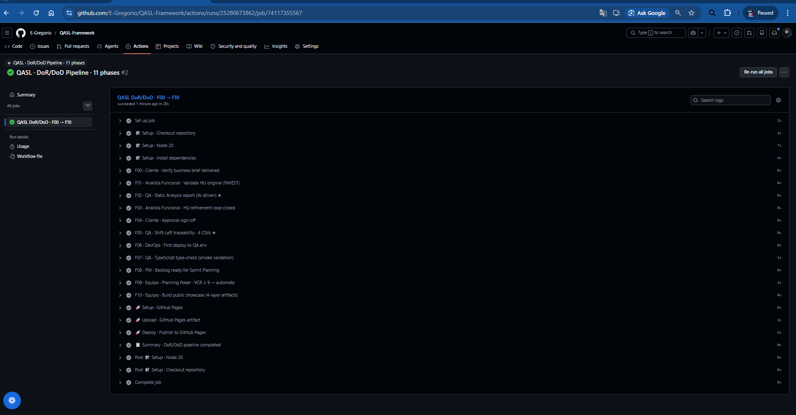
«Un pipeline en verde es la firma del QA Lead que dice: el ciclo se cerró completo, sin cortes ni excusas.»
§8 Observabilidad consolidada · Grafana
Las cuatro capas anteriores producen métricas independientes en formatos distintos (results.json de Playwright, newman-report.json, k6-summary.json y zap-report.json). El módulo F10.5 las consolida en una única base InfluxDB y las visualiza en un dashboard Grafana profesional, sin necesidad de re-ejecutar las pruebas: un orquestador único (send-all-metrics.mjs) parsea los JSON existentes y emite los measurements correspondientes.
El dashboard QASL Quality Cockpit agrupa 27 paneles en cinco filas (headline, F10.1 funcional, F10.2 contrato API, F10.3 performance, F10.4 seguridad) más un footer con metadata. Cada fila muestra los KPI primarios de su capa y, para K6, dos time-series que evolucionan a medida que se acumulan ejecuciones.


§9 Defectos detectados
El framework detectó un total de 27 defectos reales en el SUT: un BUG funcional descubierto por la capa E2E (BUG-001) y 26 hallazgos de seguridad descubiertos por la capa OWASP ZAP. Todos están documentados conforme a IEEE 1044-2009 (Standard Classification for Software Anomalies) y, cuando aplica, OWASP Top 10:2021 + CWE + CVSS v3.1.
9.1 BUG-001 · El sistema acepta passwords con menos de 6 caracteres
| ID del defecto | BUG-001 |
|---|---|
| Título | El sistema acepta contraseñas con menos de 6 caracteres y crea la cuenta |
| Detectado por | TC-008 (5 caracteres), TC-009 (1 carácter), TC-015 (ausencia de confirmación con password inválido) — Playwright E2E |
| Severidad | S2 · Crítica |
| Prioridad | P2 · Alta |
| Probabilidad en producción | Alta (>70%) — todos los usuarios nuevos pueden ser afectados |
| Riesgo del producto | Alto |
| IEEE 1044 · Tipo | Logic (validación faltante en lógica de negocio) |
| IEEE 1044 · Origen | Diseño + Código (regla declarada en HU pero no implementada) |
| ISO 25010 · Calidad afectada | Functional Suitability (Correctness) + Security (Confidentiality) |
| OWASP Top 10:2021 | A07:2021 · Identification and Authentication Failures |
| CWE | CWE-521 · Weak Password Requirements |
| CVSS v3.1 | 5.3 (Medium) · CVSS:3.1/AV:N/AC:L/PR:N/UI:N/S:U/C:L/I:N/A:N |
| Trazabilidad QASL | HU_REG_01 · BR2 · criterio de aceptación E4 |
| Acción correctiva sugerida | (1) Backend: validar len < 6 en POST /api/createAccount y devolver HTTP 400 con mensaje descriptivo. (2) Frontend: agregar atributos minlength="6" y pattern="[A-Za-z0-9]{6,}" al input. (3) Mensaje de error: claro y consistente en español. |
El informe completo del defecto (con pasos de reproducción, evidencia, hipótesis de causa raíz y plan de regresión) está disponible como documento markdown referenciado en §11 (link a GitHub).
9.2 Hallazgos de seguridad · OWASP ZAP
La tabla siguiente categoriza los 26 hallazgos detectados por el scan ZAP, agrupados por severidad y con la cantidad de instancias detectadas en el SUT.
| Severidad | Hallazgo | Instancias |
|---|---|---|
| HIGH | Vulnerable JS Library | 1 |
| MEDIUM | Absence of Anti-CSRF Tokens | 2 |
| MEDIUM | Content Security Policy (CSP) Header Not Set | 5 (sistémico) |
| MEDIUM | Source Code Disclosure - SQL | 2 |
| MEDIUM | Sub Resource Integrity Attribute Missing | 5 (sistémico) |
| MEDIUM | Vulnerable JS Library (instancias adicionales) | 2 |
| LOW | Application Error Disclosure | 2 |
| LOW | Cookie No HttpOnly Flag | 5 (sistémico) |
| LOW | Cookie Without Secure Flag | 5 (sistémico) |
| LOW | Strict-Transport-Security Header Not Set | 5 |
| LOW | X-Powered-By Information Leak | 5 (sistémico) |
| LOW | Cross-Domain JavaScript Source File Inclusion | 5 (sistémico) |
| LOW | Cross-Origin Embedder/Opener/Resource-Policy Missing | 15 (sistémico) |
| LOW | X-Content-Type-Options Header Missing | 2 |
| INFO | Session Management Response Identified | 12 |
| INFO | Modern Web Application + 6 más | varios |
El hallazgo HIGH (Vulnerable JS Library) requiere remediación inmediata: las dependencias jQuery y Bootstrap utilizadas presentan CVEs públicas. Los hallazgos MEDIUM apuntan a configuraciones de hardening web ausentes (CSP, anti-CSRF, SRI) y un caso particular de SQL source code disclosure en /test_cases que merece revisión específica.
§10 Análisis de riesgo y conclusiones
9.1 Veredicto por capa
| Capa | Veredicto | Justificación |
|---|---|---|
| F10.1 Funcional | PASS con observación | 17/20 TCs pasaron · 3 fallos consolidados en BUG-001 (defecto del SUT, no del framework) |
| F10.2 Contrato API | PASS con expected failures | 124/148 assertions pasaron · 24 expected failures documentadas (anti-bot del SUT) |
| F10.3 Performance | PASS | 5/5 thresholds respetados · 180/180 checks pasaron · p95 muy debajo de SLO |
| F10.4 Seguridad | PASS con hallazgos | 26 hallazgos del SUT documentados · 1 High requiere remediación |
9.2 Recomendaciones priorizadas
- Bloquear despliegue a producción hasta corregir BUG-001 (validación de longitud mínima de password en backend y frontend).
- Actualizar dependencias JS identificadas como vulnerables por ZAP (jQuery, Bootstrap).
- Configurar headers de seguridad faltantes: CSP, HSTS, X-Content-Type-Options, COOP/COEP/CORP.
- Remediar disclosure de SQL en
/test_cases(sanitización del response). - Implementar tokens anti-CSRF en formularios de
/loginy/signup. - Agregar atributos a cookies:
HttpOnlyySecureen todas las cookies de sesión.
9.3 Conclusión
El framework QASL ha cumplido su propósito: detectó 27 defectos reales del SUT a través de 4 capas independientes de prueba, manteniendo trazabilidad bidireccional desde la HU original hasta cada test case ejecutado, y documentando los hallazgos según los estándares públicos vigentes. La metodología de handoff blindado entre 6 actores garantiza que ningún artefacto se pierda entre fases y que cada actor reciba un input válido antes de comenzar su trabajo.
«Calidad construida desde el requerimiento, no parchada desde el defecto.» — QASL · principio fundacional
§11 Trazabilidad y artefactos públicos
Todos los artefactos producidos por el framework están disponibles públicamente. La tabla siguiente lista los enlaces canónicos para cada uno.
10.1 Repositorio fuente
- GitHub repo:
https://github.com/E-Gregorio/QASL-Framework - GitHub Pages · landing:
https://e-gregorio.github.io/QASL-Framework/ - Licencia: MIT
10.2 Reportes canónicos por capa (F10)
| Capa | Herramienta | URL pública |
|---|---|---|
| Funcional E2E | Allure | https://e-gregorio.github.io/QASL-Framework/reports/e2e/ |
| Contrato API | Newman + HTMLExtra | https://e-gregorio.github.io/QASL-Framework/reports/api/ |
| Performance | K6 Custom HTML | https://e-gregorio.github.io/QASL-Framework/reports/k6/ |
| Seguridad | OWASP ZAP Native | https://e-gregorio.github.io/QASL-Framework/reports/zap/ |
10.3 Artefactos de diseño y trazabilidad (F0-F5)
Los siguientes artefactos se sirven directamente desde GitHub Pages (HTMLs renderizados) o GitHub (markdown y CSV con render nativo).
- HU original:
artifacts/hu-original.html— la HU recibida del Analista Funcional, con cobertura inicial 25%. - HU IDEAL post-AI:
artifacts/hu-ideal.html— la HU IDEAL refinada tras detección de gaps por Claude AI, cobertura 100%. - Reporte de pruebas estáticas:
static_analyzer/reportes/HU_REG_01_REPORT.md— análisis con dashboard de métricas, brechas por severidad y matriz de cobertura por BR. - 4 CSVs trazabilidad:
shift-left-testing/{1..4}_*.csv— User Story · Test Suite · Precondition · Test Case · auto-generados por Claude AI con trazabilidad bidireccional. - Master View · Flow State:
artifacts/flow-state-dashboard.html— lámina editorial con las 11 fases (F0-F10) y el engranaje DoR/DoD entre 6 actores.
10.4 Defectos documentados
- BUG-001 (informe completo):
shift-left-testing/defects/BUG-001-password-min-length-not-validated.md - Plantilla profesional de defecto (ISTQB+ISO+IEEE):
plantillas-istqb/informe de defecto.md
10.5 Matriz de trazabilidad (resumida)
| HU | BR | Test Suite | Test Cases | Resultado |
|---|---|---|---|---|
HU_REG_01 | BR1 · Email único | TS01 + TS02 | TC-002, TC-007, TC-014 | PASS |
| BR2 · Password ≥ 6 chars | TS01 + TS02 | TC-003, TC-004, TC-008, TC-009, TC-015 | FAIL → BUG-001 | |
| BR3 · Campos obligatorios | TS02 | TC-010, TC-011, TC-012, TC-013 | PASS |
§12 Sign-off
Conforme a ISO/IEC/IEEE 29119-3:2021, el cierre formal del Test Completion Report requiere la aprobación de los siguientes roles antes de la liberación del informe a stakeholders externos.
| QA Lead | Fecha: __________ | |
|---|---|---|
| Tech Lead | Fecha: __________ | |
| Product Owner | Fecha: __________ | |
| Project Manager | Fecha: __________ |
§13 Apéndice · Bibliografía normativa
- ISTQB. Certified Tester Foundation Level Syllabus v4.0. International Software Testing Qualifications Board, 2023.
- ISO/IEC/IEEE. ISO/IEC/IEEE 29119-3:2021 — Software and Systems Engineering — Software Testing — Part 3: Test Documentation. International Organization for Standardization, 2021.
- ISO/IEC/IEEE. ISO/IEC/IEEE 29148:2018 — Systems and Software Engineering — Life Cycle Processes — Requirements Engineering. International Organization for Standardization, 2018.
- IEEE. IEEE Std 1044-2009 (R2017) — IEEE Standard Classification for Software Anomalies. Institute of Electrical and Electronics Engineers, 2017.
- ISO/IEC. ISO/IEC 25010:2011 — Systems and Software Engineering — SQuaRE — System and Software Quality Models. International Organization for Standardization, 2011.
- OWASP Foundation. OWASP Top 10:2021. Open Web Application Security Project, 2021.
- ISO. ISO 31000:2018 — Risk Management — Guidelines. International Organization for Standardization, 2018.
- IEEE. IEEE Std 1028-2008 — IEEE Standard for Software Reviews and Audits. Institute of Electrical and Electronics Engineers, 2008.
- MITRE. Common Weakness Enumeration (CWE). The MITRE Corporation.
cwe.mitre.org - FIRST. Common Vulnerability Scoring System v3.1. Forum of Incident Response and Security Teams.
first.org/cvss